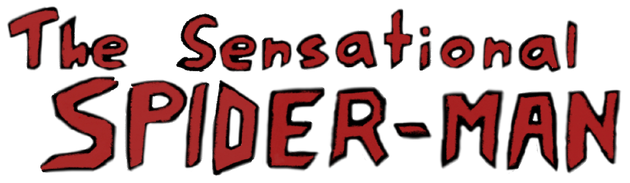
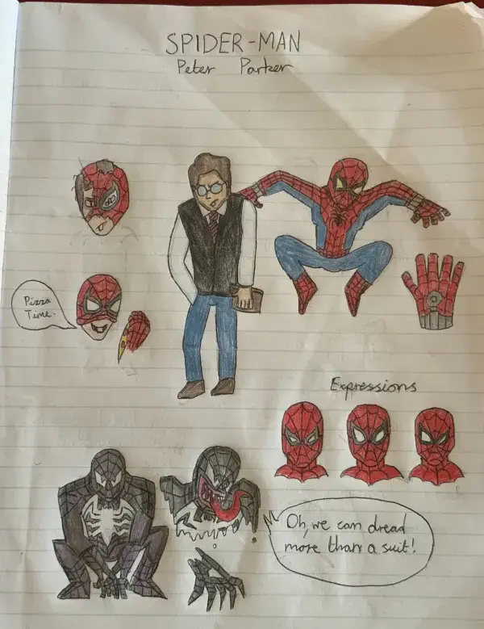
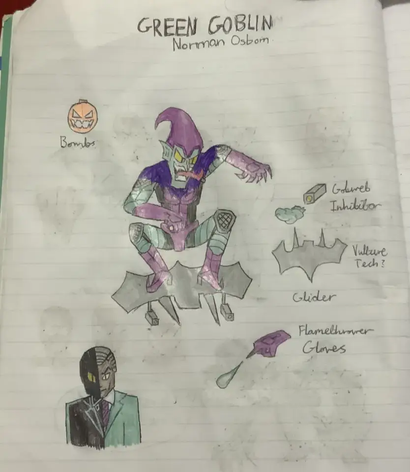

<< Go Back
Artwork
Sketchbook Contents
This is one of my main OCs named Mr. Kimitsu. Both sketches depict the same character in different time periods.
One is in a desolate, dark cyberpunk-Esque future and the other lives during medievil times.

- Mr. Kimitsu of the future is an assassin with cybernetic enhancements.
- At the time of conception, I imagined the reason for his enhancements being akin to Anakin Skywalker's, where he is disfigured as a result of a duel to the death.
- The overall design was largely influenced by my likeness towards formal wear and rival characters in Character Action games, specifically Dante's twin brother, Vergil, in 'Devil May Cry' and Jetstream Sam in 'Metal Gear Rising'.
- I tried emulating the highlights that can be seen in comic books. Although, in retrospect, I should've went for a lighter purple/blue.

- Mr. Kimitsu of the past is a legend once known as 'The Butcher'.
- The Butcher is actually supposed to be Mr. Kimitsu's ancestor from decades ago.
- The Butcher was born in blood after his rival clan destroyed his father's. Afterwards, he supposedly killed his enemies on his own in a raw, relentless rage, earning his legendary status.
- This design was influenced by the Man With No Name, 'Ghost of Tsushima' and 'Blue Eye Samurai'.

Schematics for a Bloodlust prop from Metal Gear Rising.

Schematics for a Devil Sword Sparda prop from Devil May Cry.

Schematics for a Samurai Armor cosplay for World Book Day.

Schematics for a Ghost Armor cosplay.

Green Goblin in the Sam Raimi 'Spider-Man' movies but with the classic purple and green colours.

Breaking Bad fan art.

An attempt to merge all three live action incarnations of Spider-Man into one costume.

A portrait of John Wick in the style of Sean Galloway.
Next, I tried to picture how a couple of Dr. Eggman's inventions throughout Sonic would exist in real life as mini-figs/toys.
I knew I was going to make the Badniks like the Motobug an RC car. However, I was unsure about Eggman's more ambitious creations such as the Death Egg Robot.
A few of symbiote sketches and an Afton redesign from 'Freddy Fazbear's Pizzeria Simulator'.

Artwork that was intended for a fan comic that a friend and I were working on during secondary school.
My friend, who I'll be referring to as 'Doom', would develop the scripts whereas I'd focus on the visuals.
Character Designs

- Peter's overall design was based on the Lee and Ditko comics in the earlier years of Spidey's history.
- Initially, my friend wanted Peter to have a chirped tooth, which was misinterpreted as buck teeth.
- I tried experimenting with eyes that were slightly yellow much like the 'Spectacular Spider-Man' animated series. I realized that I colored in too much yellow, so I decided to stick with white lenses.
- At the time, I wasn't good at hair so I used Andrew Garfield's as a reference.
- For fun, I drew what I thought the Black Suit and Venom would look. Just in case we wanted to adapt the Black Suit saga. This is going to be a very common trope in the other designs.

- An attempt to modernize the classic Green Goblin look by combing different interpretations of his design from his various adaptations.
- The addition of a tongue was intended to give this design a more animalistic flair.
- After I draw the top cowl piece, I found it to be very similiar to the silhouette of a jester, so I added a piece of cloth at the neck to mimic the shape of a jester's collar.

The Rhino.

Doc Connors, the Lizard.
Doom also expressed interest in including other characters in Marvel Comics like Captain America, Iron Man or the Hulk.

Matt Murdock, Daredevil - the Devil of Hell's Kitchen.

- Crime Lords: the Kingpin, Tombstone & Hammerhead
- Much like in 'The Spectacular Spider-Man', Tombstone would've started off working for Fisk. Hence, why he is wearing a red shirt.

Anthony Stark, Iron Man.

Flash Thompson & Captain Stacey.
Later, I revised Spidey & Goblin's designs.

- On my next attempt, I portrayed different aspects of Peter's classic suit throughout his superhero career.
- For the first suit, I went forward with making it appear homemade with the inclusion of the goggle strap, slippers and the seperation of the blue and red portions on the arms - this was to convey that the torso piece was made with a long sleeve and a T-shirt.
- The addition of the webs on the 'Last Stand' suit is meant to imply that our Peter had a brighter future.

- This time, Goblin's outfit looked cleaner since I thought the previous iteration was overdesigned.
- The armor pieces were more influenced by medievil military wear, so it could lean into how Norman was into mythology.
Panel Work
Unforunately, the comic's first issue was never finished.
However, I was able to recover the work I did through my previous messages with Doom
and the script was accessed via Google Docs.

The cover depicts two Spider-Men, pointing at one another.

- Characters and background were drawn on Flip-A-Clip.
- I took screenshots of them and edited everything with Adobe Photoshop Mix on my iPad.
- After that, I messed with the contrast and added some text.

A young (about 6), bespectacled Peter Parker is seen watching the news on a small TV, eyes wide and smiling. Upon closer inspection of the image of the TV, we see the first heroes- Namor and the Human Torch, battling by the Statue of Liberty. He watches happily, as the panels zoom in on his eyes, before zooming back out to a rooftop. Peter, now 16 years old, wears his Spider-Man suit.

We see a group of robbers trying to break into a fashion store titled Kingsley's.
Basically, Spidey comes along, puts a stop to the thugs before the next scene shows Chameleon posing as him.
<< Go Back
Digital Drawings
The first set of digital drawings were thumbnails for my music playlists. They were all drawn on Krita and edited on Photopea.


- Based on the main menu screen in
'Ghost of Tsushima'.
- The burned grass was achieved through a gradient overlay.
- Sparks and rain VFX are different layers with its Blend Mode set to 'Screen'.


- This was inspired by the opening titles of the 3rd 'John Wick' film.
- The radial halftone was done by adding a 'Color Halftone' filter to a black and white radial gradient layer, setting its Blend Mode to 'Multiply' and lowering the opacity.
- Lighting on the sword is a 'Soft Light' layer whilst the line of the gunshot fire is an 'Overlay' layer.
- Lastly, to make the subject (sword) blend in with the background, I added a Gradient Map overlay.


- On Krita, the cherry blossoms were drawn with a 'Ink-8 Sumi-e' brush.
- In Photopea, two layers make up the sun ray effect. The first is a 'Soft Light' layer with an Outer Glow, and the spotlight is an overlay on top.
Earlier iterations of Mr. Kimitsu and the Butcher. Likewise with the work I did for Sensational Spider-Man,
they were drawn on Flip-A-Clip and edited on Photoshop Mix.

Out of boredom in a classroom, I sketched a design for a mech in Krita.

Unfinished shading practice.

Ronin outfit sketch.

A merge between V in 'Murder Drones', and Nelo Angelo (Vergil) in 'Devil May Cry'.
Prior to making the playlist thumbnails, I wanted to render the Butcher in the style of Samurai Jack.

Krita sketch.

Before Gradient Maps and adding the sun in Photopea.

The final.

Green Variant.
I also drew one of my friends as Serial Designation N.
<< Go Back
Work in 3D
Some of my earlier works with a 3D software. All of which were done in ROBLOX.
Characters are posed with the Moon Animator Plugin, which I acquired before it became pricey to get.
Props are either rigged or welded to the character's hands.

- Batman against his rogues.
- The Joker's smile is a decal underneath the actual face making the expression.

Springtrap ... For Rigging.

Model of Dover Castle ...
For History Homework.

I'm scared.
<< Go Back